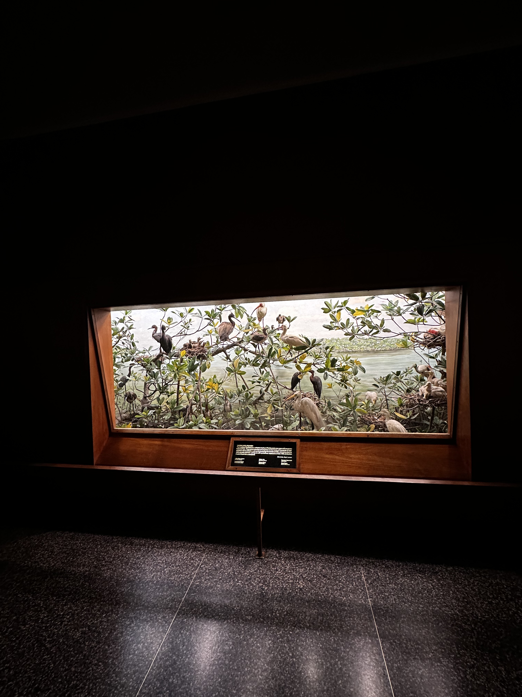
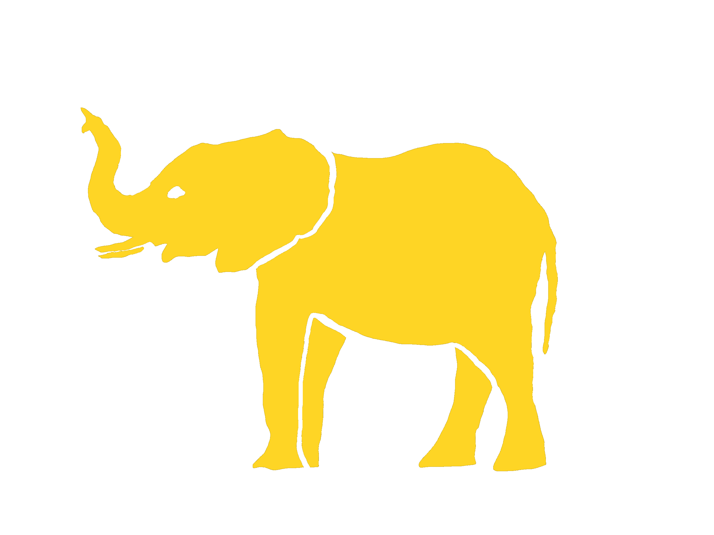
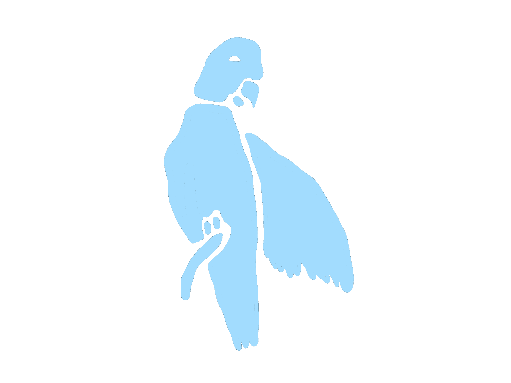
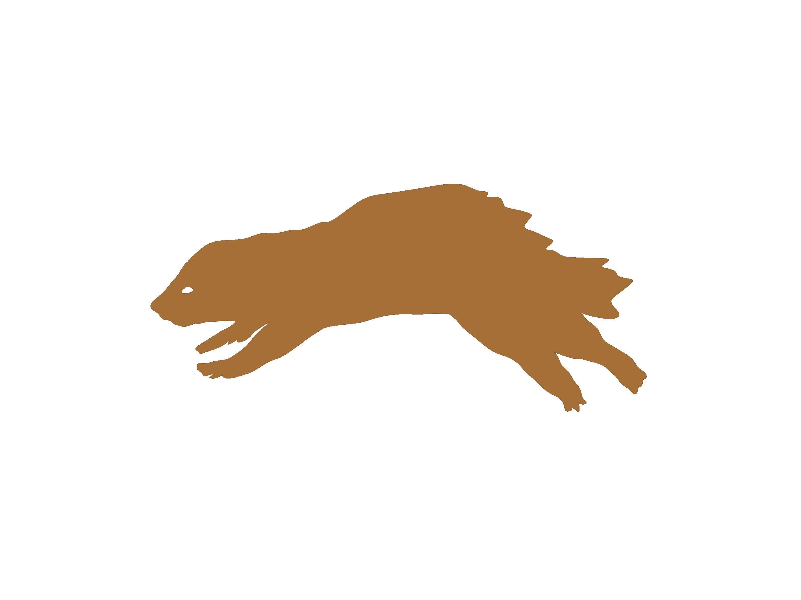
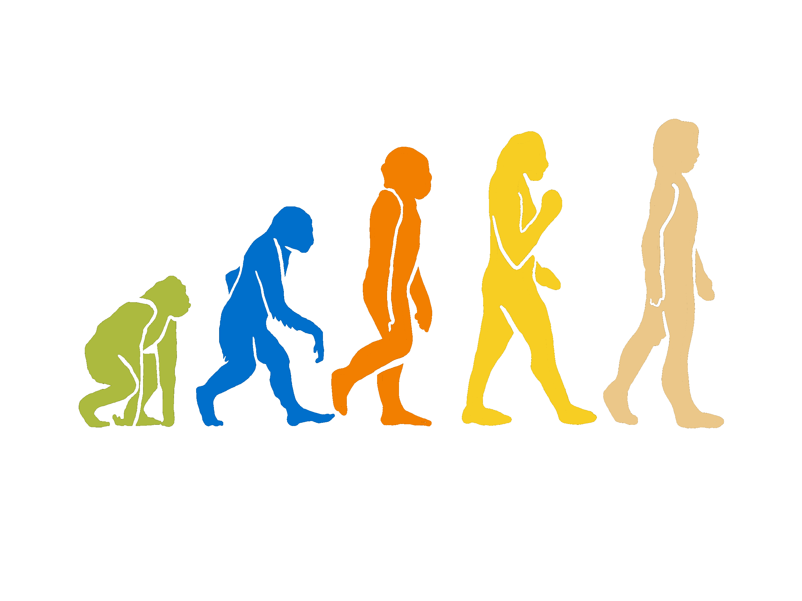
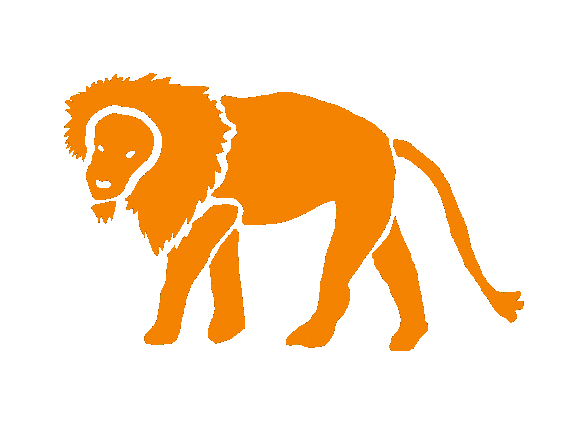
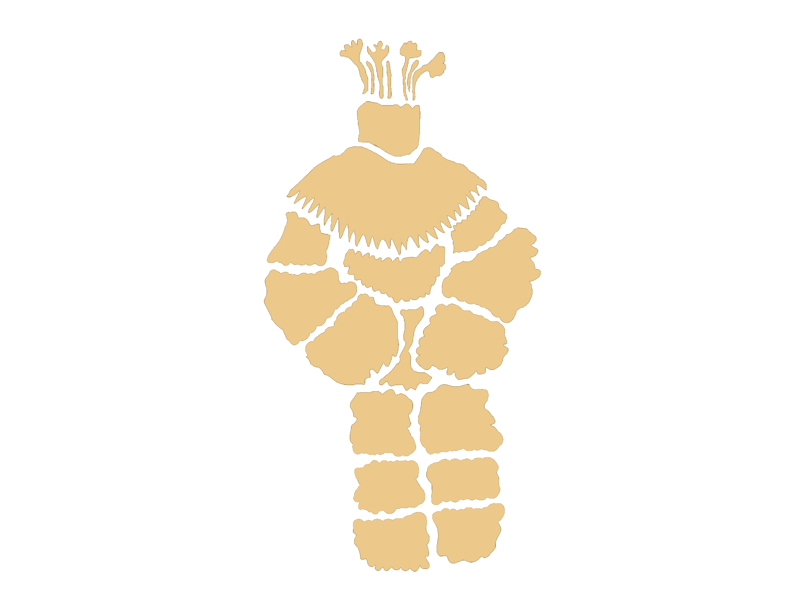
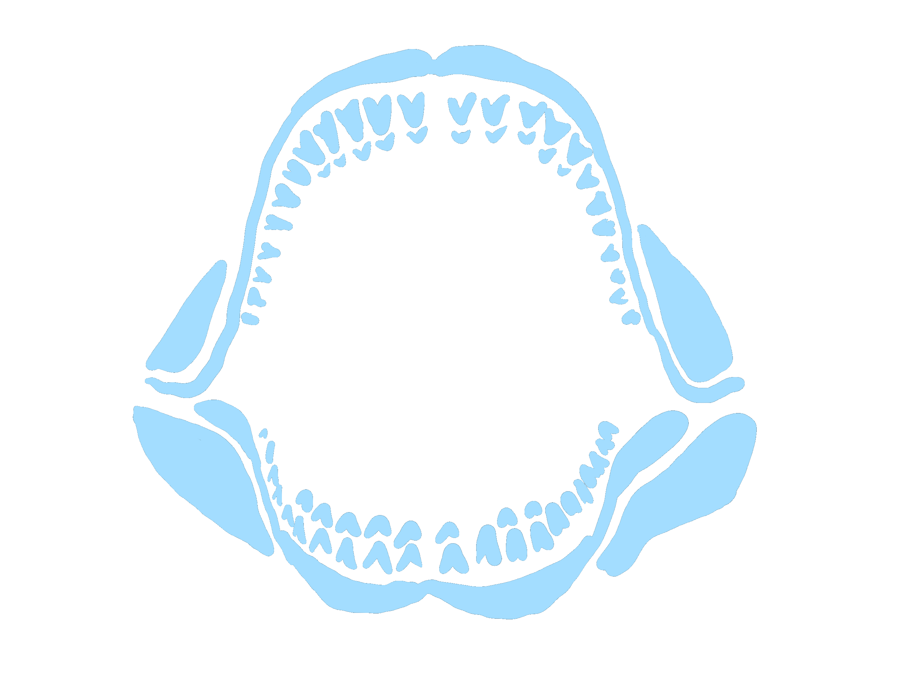
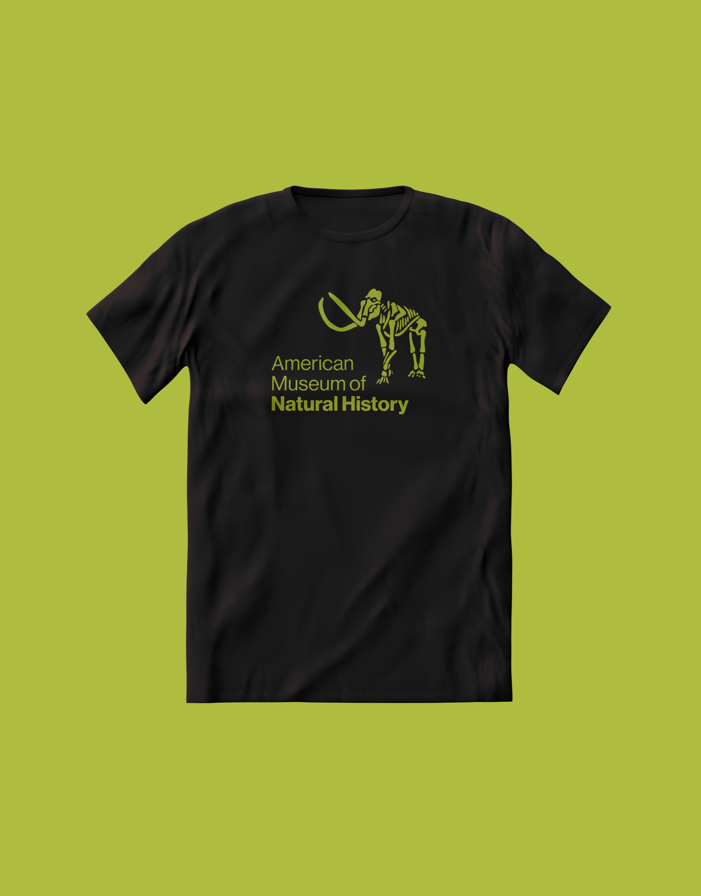
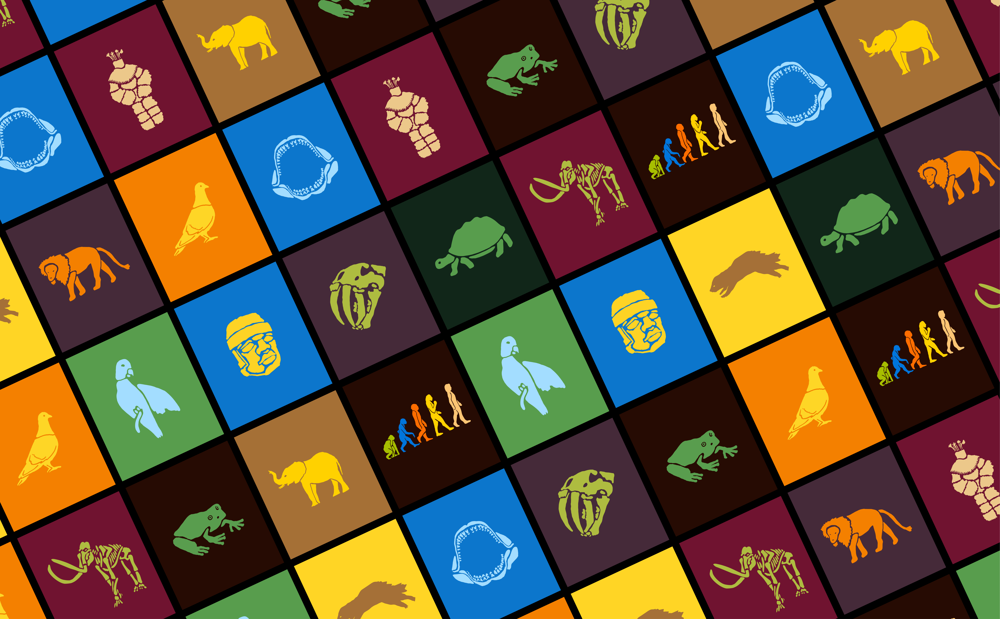

American Museum of Natural History
Timeline
April, 2025 (1 month)
School
Parsons School of Design
Program
Master's in Communication Design
Course
Motion Graphics
Overview
This project involved creating a new brand identity for a museum and designing key pages for its website. We then brought the identity to life through logo and interface animations. A core part of the assignment was exploring how motion can communicate the museum’s essence, translating its mission, stories, and collection into a meaningful visual extension. Each concept was meant to be unique and reflect our own perspective on the museum. The logo animation was intentionally designed to connect back to the museum’s core identity.
Concept
While walking through the museum, much of the environment is intentionally dark. The displays act as moments of illumination, pulling you into each scene. This concept plays with the idea of creating a “window” into different moments in time and places we can only experience through a museum.












